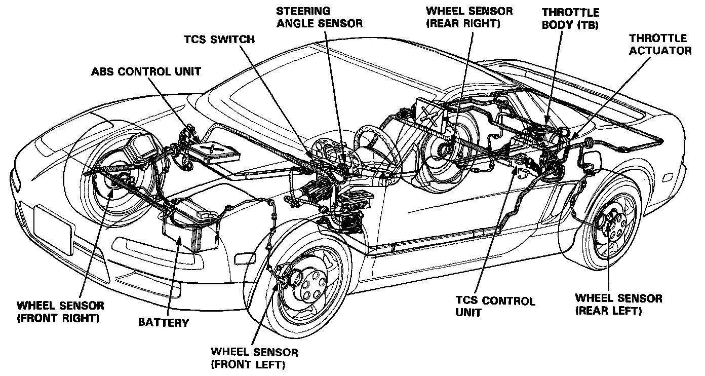
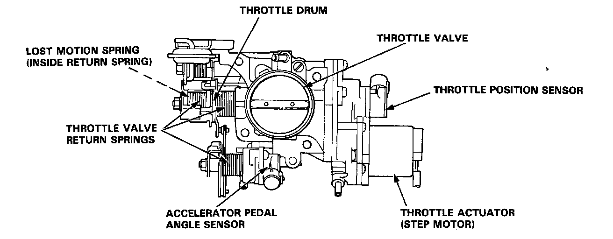
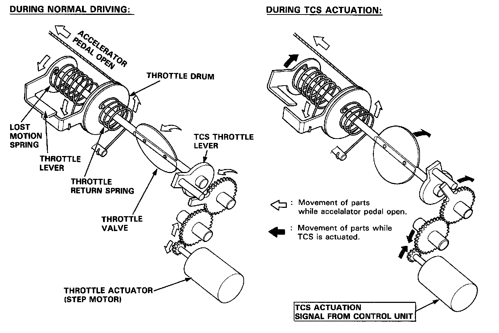

Traction Control System (TCS)
Role of SystemThe NSX traction control is a variable system designed to enhance traction during acceleration and cornering. It does so by determining the optimum amount of wheel spin for any given driving situation, then suppressing surplus engine power accordingly.
Construction and Function
The TCS control unit gets signals about the vehicle's speed, direction, and road conditions from sensors at the wheels and the steering column. Based on these signals, the control unit will determine the optimum amount of wheel spin. Because the system is variable, the control unit may determine, depending on the driving conditions, that some wheel spin is beneficial (thus enhancing straight-line acceleration), or that no wheel spin is beneficial (thus enhancing cornering). For any given driving situation, the control unit will determine the amount of wheel spin best suited to the driver's needs and, if necessary, will then signal the throttle actuator and Engine Control Module (ECM) to reduce engine power.
The system is automatically 'ready" whenever the engine is started, but can be manually canceled with the TCS switch. However, once activated, the system cannot be canceled until it is once again in the ready state.

Components:
- Wheel sensors: The TCS "shares" the wheel sensors with the ABS. The wheel sensors transmit wheel speed signals to the TCS through the ABS control unit.
- Steering angle sensor: The steering angle sensor signals the TCS control unit about the amount of steering angle.
- Throttle actuator: The throttle actuator gets signals from the TCS control unit and closes the throttle valve accordingly.
- TCS control unit: The control unit gets driving condition signals from the sensors and, if necessary, signals the throttle actuator to close the throttle valve and the engine control module (ECM).


Engine Output Control
When the TCS is activated, the control unit signals the throttle actuator, located next to the throttle valve. The throttle actuator is linked to the throttle valve through a series of reduction gears. Although the accelerator pedal position is still within the driver's control, the throttle valve is automatically relaxed to achieve optimum traction.